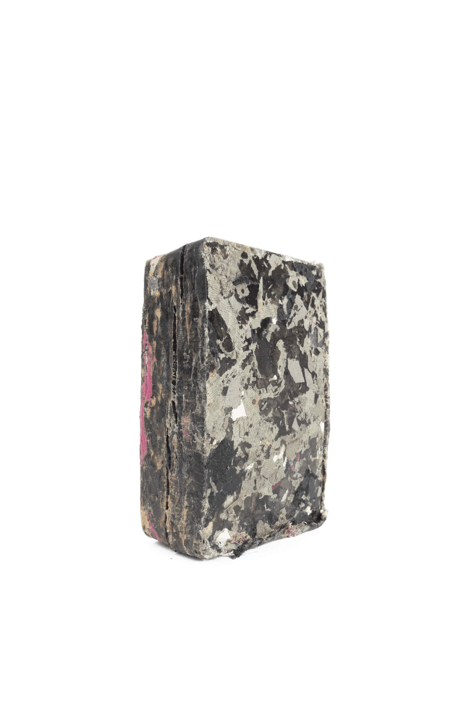
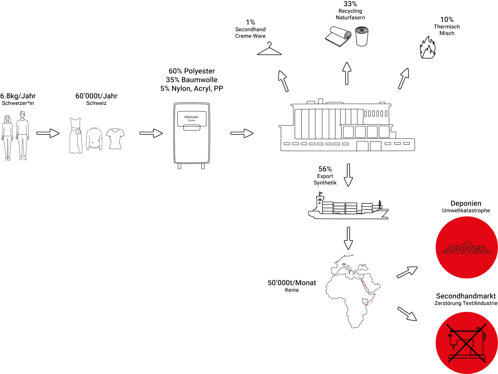
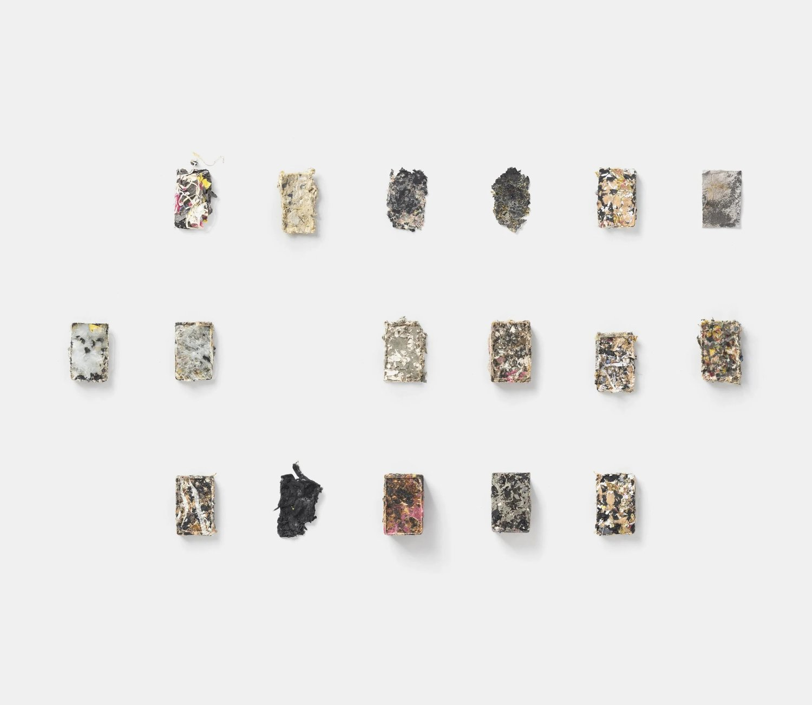

Tex-Brick
TexBrick is an industrial design and geo-design project that addresses the environmental crisis of discarded synthetic clothing. By combining textile scraps with recycled polypropylene, the project creates a functional composite material that offers a sustainable alternative to the pollution caused by textile landfills in developing countries.

TexBrick began as an investigation into the lifecycle of synthetic used clothing and its devastating impact on the environment. When textiles are exported and discarded in developing countries, they often end up in landfills where erosion releases synthetic fibers into the groundwater, contaminating entire ecosystems.
Environmental Context. The project highlights the dual problem of ecological pollution from textile waste and the destruction of local textile industries in the Global South due to the second-hand market.
Material Experimentation. Developed in 2019 in collaboration with Timo Flury, the research involved a series of experiments to find a new, durable purpose for synthetic rags.
Technical Process. The team experimented with melting textiles using their own plastic content and testing various natural binders, ultimately concluding that Polypropylene (PP) offered the best results.
Recycling Potential. By using PP—a plastic with a low melting point and high recycling potential—the process creates solid blocks from varied textile scraps.
Design Tools. The project’s conceptualization and visual series of experimental blocks were realized using Onshape and Keyshot.
TexBrick represents a shift toward "Geo-Design," where the designer's role expands to include systemic solutions for global waste streams.


